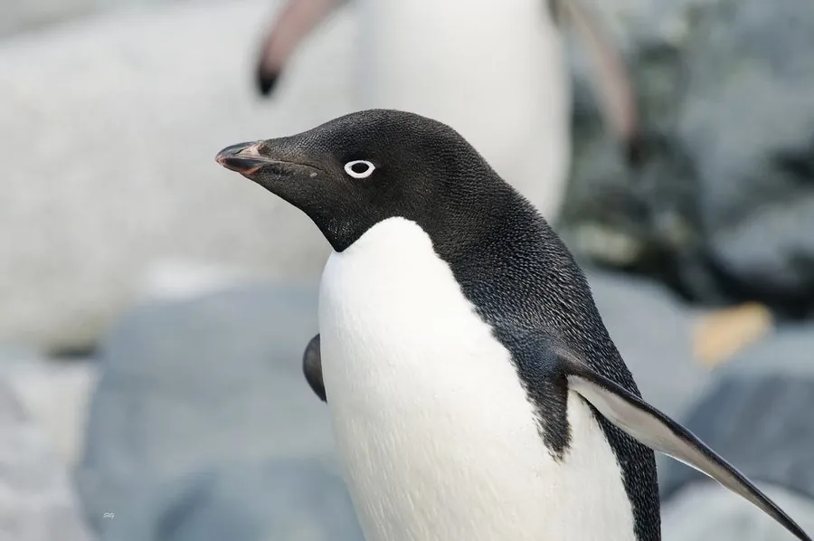

鸟类 · 动物界
阿德利企鹅 Pygoscelis adeliae

南极大陆常见的企鹅，黑白分明、眼睛周围有一圈白色，成群在冰原上繁殖，是南极生态的代表物种之一。
- 分类
- 门脊索动物门纲鸟纲目企鹅目科企鹅科属阿德利企鹅属
- 栖息环境
- 南极大陆及周边岛屿的冰原和海岸，繁殖期集群营巢
- 地理分布
- 南极大陆及周边岛屿，中国无分布
- 保护级别
- IUCN 无危（LC）；南极物种，中国无分布
物种志
阿德利企鹅体长 70–75 cm，体重 4–5.5 kg。它的头部和背部为黑色，腹部白色，眼睛周围有一圈明显的白色羽毛，因此看起来像戴了一副白框眼镜；喙黑色，腿短呈粉红色。它的尾羽较长，行走时拖在身后。
阿德利企鹅分布于南极大陆及周边岛屿，是南极最常见的企鹅之一。它们以磷虾、小鱼和乌贼为食，擅长游泳和潜水，繁殖期在冰原上集群营巢，用石子堆成浅巢，每窝产卵 2 枚，孵化 32–37 天，双亲轮流孵蛋和觅食。阿德利企鹅是南极生态系统的重要成员，其种群变化被科学家用作监测气候变化和磷虾资源的指标，目前被列为无危物种，也是南极最常见的鸟类之一。
形态与习性
- 食性磷虾、小鱼和乌贼
- 体长70–75 cm
- 体重4–5.5 kg
- 繁殖每窝 2 枚卵，孵化 32–37 天
- 特征眼睛周围有一圈白色羽毛，像戴着白框眼镜
- 寿命野外约 15–20 年
趣味知识
- 阿德利企鹅眼睛周围有一圈白色羽毛，看起来像戴了白框眼镜。
- 它们在南极冰原上用石子堆巢，石头在繁殖地是珍贵的资源。
- 阿德利企鹅的种群变化被用作监测南极气候变化和磷虾资源的指标。